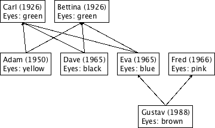
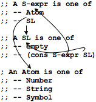
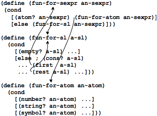
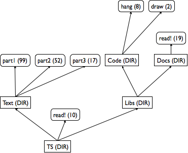
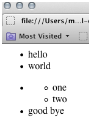
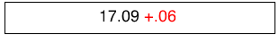
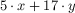
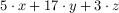

IV Intertwined Data
The data definitions for lists and natural numbers stand out due to their self-references. As it turns out, though, many interesting classes of data require even more complex data definitions than these two. Indeed, there is no end to the variations, and it therefore becomes a critical skill for a programmer to take any data definition as the starting point for a program. And that’s what the design recipe is all about.
In this part, we first work out a slightly generalized version of the design recipe that works for all forms of structural data definitions. Then we introduce the concept of iterative refinement, which is one of the reasons why all programmers are little scientists. Two more chapters are basically practice on refining data and functions: one on interpreters and one on XML processing. The last chapter expands the design recipe one more time, applying it to function that process two complex arguments at the same time.
22 The Poetry Of S-expressions
Programming resembles poetry in many ways. For example, programmers—
Nevertheless, this chapter shows the full power of the design recipe and introduces you to the kinds of data that real-world programs cope with. To connect this material with what you will encounter in your life as a programmer, we label each section with appropriate names: trees, forests, XML. The last one is a bit misleading, because it is really about S-expressions; the connection between S-expressions and XML is clarified in The Commerce Of XML, which in contrast to this chapter, comes much closer to real-world uses of complex forms of data.
22.1 Trees
All of us have a family tree. One way to draw a family tree is to add a node every time a child is born. From the node, we can draw connections to the father and mother of the child. For those people in the tree whose parents are unknown, there is no connection to draw. The result is a so-called ancestor family tree because, given any person in the tree, we can find all of the person’s known ancestors.

Figure 59 displays a three-tier family tree. Gustav is the child of Eva and Fred, while Eva is the child of Carl and Bettina. In addition to people’s names and family relationships, the tree also records years of birth and eye colors. Based on this sketch, you can easily imagine a family tree reaching back many generations and one that records other kinds of information.
(define-struct child (father mother name date eyes))
(define Adam (make-child Carl Bettina "Adam" 1950 "hazel"))
(define-struct no-parent ())
(make-child (make-no-parent) (make-no-parent) "Bettina" 1926 "green")
(define-struct no-parent ()) (define-struct child (father mother name date eyes)) ; A FT (family tree) is one of: ; – (make-no-parent) ; – (make-child FT FT String N String)
(define MTFT (make-no-parent)) ; A FT (family tree) is one of: ; – MTFT ; – (make-child FT FT String N String)
(make-child MTFT MTFT "Carl" 1926 "green")
(make-child (make-child MTFT MTFT "Carl" 1926 "green") (make-child MTFT MTFT "Bettina" 1926 "green") "Adam" 1950 "hazel")
; Oldest Generation: (define Carl (make-child MTFT MTFT "Carl" 1926 "green")) (define Bettina (make-child MTFT MTFT "Bettina" 1926 "green")) ; Middle Generation: (define Adam (make-child Carl Bettina "Adam" 1950 "hazel")) (define Dave (make-child Carl Bettina "Dave" 1955 "black")) (define Eva (make-child Carl Bettina "Eva" 1965 "blue")) (define Fred (make-child MTFT MTFT "Fred" 1966 "pink")) ; Youngest Generation: (define Gustav (make-child Fred Eva "Gustav" 1988 "brown"))
; FT -> ??? (define (fun-for-FT a-ftree) (cond [(no-parent? a-ftree) ...] [else ; (child? a-ftree) ...]))
; FT -> ??? (define (fun-for-FT a-ftree) (cond [(no-parent? a-ftree) ...] [else (... (child-father a-ftree) ... ... (child-mother a-ftree) ... ... (child-name a-ftree) ... ... (child-date a-ftree) ... ... (child-eyes a-ftree) ...)]))
; FT -> ??? (define (fun-for-FT a-ftree) (cond [(no-parent? a-ftree) ...] [else (... (fun-for-FT (child-father a-ftree)) ... ... (fun-for-FT (child-mother a-ftree)) ... ... (child-name a-ftree) ... ... (child-date a-ftree) ... ... (child-eyes a-ftree) ...)]))
; FT -> Boolean ; to determine whether a-ftree contains a child ; structure with "blue" in the eyes field (define (blue-eyed-child? a-ftree) (cond [(no-parent? a-ftree) ...] [else (... (child-name a-ftree) ... ... (child-date a-ftree) ... ... (child-eyes a-ftree) ... ... (blue-eyed-child? (child-father a-ftree)) ... ... (blue-eyed-child? (child-mother a-ftree)) ...)]))
(check-expect (blue-eyed-child? Carl) false)
(check-expect (blue-eyed-child? Gustav) true)
Now we are ready to define the actual function. The function distinguishes between two cases: a no-parent node and a child node. For the first case, the answer should be obvious even though we haven’t made up any examples. Since the given family tree does not contain any child node whatsoever, it cannot contain one with "blue" as eye color. Hence the result in the first cond clause is false.
(child-name a-ftree) extracts the child’s name;
(child-date a-ftree) extracts the child’s date of birth
(child-eyes a-ftree), which extracts the child’s eye color
- according to the purpose statement for the function,
(blue-eyed-child? (child-father a-ftree))
determines whether some node in the father’s FT has "blue" eyes; and (blue-eyed-child? (child-mother a-ftree)) determines whether someone in the mother’s FT has blue eyes;
Clearly, if the given child structure contains "blue" in
the eyes field, the function’s answer must be true. Furthermore,
the expressions concerning names and birth dates
are useless, which leaves us with the two recursive calls. As stated,
(blue-eyed-child? (child-father a-ftree)) processes the
father’s family tree and (blue-eyed-child? (child-mother a-ftree)) the mother’s. If either of these expressions returns
true, a-ftree contains a child with
"blue" eyes—
(string=? (child-eyes a-ftree) "blue")
(blue-eyed-child? (child-father a-ftree))
(blue-eyed-child? (child-mother a-ftree))
(or (string=? (child-eyes a-ftree) "blue") (blue-eyed-child? (child-father a-ftree)) (blue-eyed-child? (child-mother a-ftree)))
; FT -> Boolean ; to determine whether a-ftree contains a child ; structure with "blue" in the eyes field (check-expect (blue-eyed-child? Carl) false) (check-expect (blue-eyed-child? Gustav) true) (define (blue-eyed-child? a-ftree) (cond [(no-parent? a-ftree) false] [else (or (string=? (child-eyes a-ftree) "blue") (blue-eyed-child? (child-father a-ftree)) (blue-eyed-child? (child-mother a-ftree)))]))
(blue-eyed-child? Carl) |
== (blue-eyed-child? (make-child MTFT MTFT "Carl" 1926 "green")) |
== |
(cond |
[(no-parent? (make-child MTFT MTFT "Carl" 1926 "green")) false] |
[else |
(or (string=? |
(child-eyes (make-child MTFT MTFT "Carl" 1926 "green")) |
"blue") |
(blue-eyed-child? |
(child-father (make-child MTFT MTFT "Carl" 1926 "green"))) |
(blue-eyed-child? |
(child-mother (make-child MTFT MTFT "Carl" 1926 "green"))))]) |
== |
(or (string=? |
(child-eyes (make-child MTFT MTFT "Carl" 1926 "green")) |
"blue") |
(blue-eyed-child? |
(child-father (make-child MTFT MTFT "Carl" 1926 "green"))) |
(blue-eyed-child? |
(child-mother (make-child MTFT MTFT "Carl" 1926 "green")))) |
== |
(or (string=? "green" "blue") |
(blue-eyed-child? |
(child-father (make-child MTFT MTFT "Carl" 1926 "green"))) |
(blue-eyed-child? |
(child-mother (make-child MTFT MTFT "Carl" 1926 "green")))) |
== |
(or false |
(blue-eyed-child? MTFT) |
(blue-eyed-child? MTFT)) |
== (or false false false) |
== false |
(blue-eyed-child? MTFT) |
== (blue-eyed-child? (make-no-parent)) |
== |
(cond |
[(no-parent? (make-no-parent)) false] |
[else |
(or (string=? (child-eyes (make-no-parent)) "blue") |
(blue-eyed-child? (child-father (make-no-parent))) |
(blue-eyed-child? (child-mother (make-no-parent))))]) |
== |
(cond |
[true false] |
[else |
(or (string=? (child-eyes (make-no-parent)) "blue") |
(blue-eyed-child? (child-father (make-no-parent))) |
(blue-eyed-child? (child-mother (make-no-parent))))]) |
== false |
Exercise 248. Develop count-persons. The function consumes a family tree node and counts the child structures in the tree.

Exercise 249. Develop the function average-age. It consumes a family tree node and the current year. It produces the average age of all child structures in the family tree.
Exercise 250. Develop the function eye-colors, which consumes a family tree node and produces a list of all eye colors in the tree. An eye color may occur more than once in the resulting list.
Hint: Use the append operation to concatenate lists:
(append (list 'a 'b 'c) (list 'd 'e))
== (list 'a 'b 'c 'd 'e)
Exercise 251. Suppose we need the function blue-eyed-ancestor?. It is like blue-eyed-child? but responds with true only when an ancestor, not the given child node, has blue eyes.
Even though the functions differ, their signatures are the same:
; FT -> Boolean ; to determine whether a-ftree contains a child node with blue eyes (define (blue-eyed-ancestor? a-ftree) ...) To appreciate the difference, we take a look at Eva:(check-expect (blue-eyed-child? Eva) true)
Eva is blue-eyed. Because she does not have a blue-eyed ancestor, however, we get(check-expect (blue-eyed-ancestor? Eva) false)
Now suppose a friend comes up with this solution:
(define (blue-eyed-ancestor? a-ftree) (cond [(no-parent? a-ftree) false] [else (or (blue-eyed-ancestor? (child-father a-ftree)) (blue-eyed-ancestor? (child-mother a-ftree)))])) Explain why this function fails the above test. What is the result of (blue-eyed-ancestor? A) no matter which A you choose? Can you fix your friend’s solution?
22.2 Forests
Sample Problem: Design the function blue-eyed-child-in-forest?, which determines whether a family forest contains a child with "blue" in the eyes field.
; FF -> Boolean ; does the forest contain any child node with "blue" eyes (check-expect (blue-eyed-child-in-forest? ff1) false) (check-expect (blue-eyed-child-in-forest? ff2) true) (check-expect (blue-eyed-child-in-forest? ff3) true) (define (blue-eyed-child-in-forest? a-forest) (cond [(empty? a-forest) false] [else (or (blue-eyed-child? (first a-forest)) (blue-eyed-child-in-forest? (rest a-forest)))]))
We leave it to you to figure out the signature, the purpose statement, and the examples for this solution. As for the template, the design can employ the list template because blue-eyed-child-in-forest? consumes lists. If each item on the list were a structure with an eyes field and nothing else, the function would iterate over those structures using the selector function for the eyes field and a string comparison. In this case, each item is a family tree but luckily, we already know how to process family trees.
Let us step back for a moment and inspect how we explained figure 62. The starting point is a pair of data definitions where the second refers to the first and both refer to themselves. The result is a pair of functions where the second refers to the first and both refer to themselves. In other words, the function definitions refer to each other the same way the data definitions refer to each other. To some extent, this relationship is a simple generalization of what we have seen so far. The difference is that two data definitions and two functions are involved, but not counting the self-references of both data definitions, we have encountered this situation before in some of our projects; we just happen to gloss over it. Instead of dwelling on the idea in the context of trees, we move on to S-expressions and articulate a generalized design recipe afterwards.
Exercise 252. Reformulate the data definition for FF with the List-of abstraction. Now do so for the signature of blue-eyed-child-in-forest?. Finally, define blue-eyed-child-in-forest? using one of the list abstractions from the preceding chapter.
Exercise 253. Design the function average-age. It consumes a family forest and a year, specified as a natural number. From this data, it produces the average age of all child nodes in the forest. Note: If the trees in this forest overlap, the result isn’t a true average because some people may contribute more than others. For this exercise, act as if the trees don’t overlap.
22.3 S-expressions
; An S-expr (S-expression) is one of: ; – Atom ; – SL ; An SL (S-list) is one of: ; – empty ; – (cons S-expr SL) ; An Atom is one of: ; – Number ; – String ; – Symbol
The idea of S-expressions is due to John McCarthy and his Lispers, who created S-expressions in 1958 so that they could process Lisp programs with other Lisp programs. This seemingly circular reasoning may sound esoteric but as mentioned in Intermezzo: Quote, Unquote, S-expressions are a versatile form of data that is often rediscovered, most recently with applications to the world wide web. Working with S-expressions thus prepares a discussion of how to design functions for highly intertwined data definitions.
Sample Problem: Design the function count, which determines how many times some symbol sy occurs in some S-expression sexp.
'hello 20.12 "world"
empty (cons 'hello (cons 20.12 (cons "world" empty))) (cons (cons 'hello (cons 20.12 (cons "world" empty))) empty)
> '() empty
> '(hello 20.12 "world") (list 'hello #i20.12 "world")
> '((hello 20.12 "world")) (list (list 'hello #i20.12 "world"))
> '(define (f x) (+ (* 3 x x) (* -2 x) 55))
(list
'define
(list 'f 'x)
(list '+ (list '* 3 'x 'x) (list '* -2 'x) 55))
> '((6 f) (5 e) (4 d)) (list (list 6 'f) (list 5 'e) (list 4 'd))
> '(wing (wing (wing body wing) wing) wing) (list 'wing (list 'wing (list 'wing 'body 'wing) 'wing) 'wing)
(check-expect (count 'world 'hello) 0) (check-expect (count '(world hello) 'hello) 1) (check-expect (count '(((world) hello) hello) 'hello) 2)
For intertwined data definitions, create one template per data definition. Create them in parallel. Make sure they refer to each other in the same way the data definitions do.
(define (count sexp sy) (cond [(atom? sexp) ...] [else ...])) (define (count-sl sl sy) (cond [(empty? sl) ...] [else ...])) (define (count-atom at sy) (cond [(number? at) ...] [(string? at) ...] [(symbol? at) ...]))
(define (count sexp sy) (cond [(atom? sexp) ...] [else ...])) (define (count-sl sl sy) (cond [(empty? sl) ...] [else (... (first sl) ... (rest sl) ...)])) (define (count-atom at sy) (cond [(number? at) ...] [(string? at) ...] [(symbol? at) ...]))
The atom? line in count corresponds to the first line in the definition of S-expr, which points to Atom. To indicate this reference from one data definition to the other inside the template, we add (count-atom sexp sy), meaning we interpret sexp as an Atom and let the appropriate function deal with it.
Following the same line of thought, the second cond line in count calls for the addition of (count-sl sexp sy).
The empty? line in count-sl corresponds to a line in the data definition that makes no reference to another data definition.
In contrast, the else line contains two selector expressions, and each of them extracts a different kind of value. Specifically, (first sl) is an element of S-expr, which means that we should wrap it in (count ...). After all, count is responsible for counting inside of arbitrary S-exprs. In the same vein, (rest sl) corresponds to a self-reference, and we know that we need to deal with those via recursive function calls.
Finally, all three cases in Atom refer to atomic forms of data. Therefore the count-atom function does not need to change.
(define (count sexp sy) (cond [(atom? sexp) (count-atom sexp sy)] [else (count-sl sexp sy)])) (define (count-sl sl sy) (cond [(empty? sl) ...] [else (... (count (first sl) sy) ... (count-sl (rest sl) sy) ...)])) (define (count-atom at sy) (cond [(number? at) ...] [(string? at) ...] [(symbol? at) ...]))
; S-expr Symbol -> N ; count all occurrences of sy in sexp (define (count sexp sy) (cond [(atom? sexp) (count-atom sexp sy)] [else (count-sl sexp sy)])) ; SL Symbol -> N ; count all occurrences of sy in sl (define (count-sl sl sy) (cond [(empty? sl) 0] [else (+ (count (first sl) sy) (count-sl (rest sl) sy))])) ; Atom Symbol -> N ; count all occurrences of sy in at (define (count-atom at sy) (cond [(number? at) 0] [(string? at) 0] [(symbol? at) (if (symbol=? at sy) 1 0)]))
[(atom? sexp) (count-atom sexp sy)] checks whether sexp is an atom. Hence, it interprets the S-expr as an Atom and calls count-atom on it. Doing so means the latter function counts how often sy occurs in sexp—
which is precisely what we want, but specialized to the appropriate kind of data. [else (+ (count (first sl) sy) (count-sl (rest sl) sy))] means the given list consists of two parts: an S-expr and an SL. By using count and count-sl, the corresponding functions are used to count how often sy appears in each part, and the two numbers are added up—
yielding the total number of sys in all of sexp. [(symbol? at) (if (symbol=? at sy) 1 0)] tells us that if an Atom is a Symbol, sy occurs once if it is equal to sexp and otherwise it does not occur at all. Since the two pieces of data are atomic, there is no other possibility.
Exercise 255. In a sense, we designed one program that consists of three connected functions. To express this fact, we can use local to organize the definitions:
; S-expr Symbol -> N ; count all occurrences of sy in sexp (define (count sexp sy) (local (; S-expr Symbol -> N ; the main function (define (count-sexp sexp sy) (cond [(atom? sexp) (count-atom sexp sy)] [else (count-sl sexp sy)])) ; SL Symbol -> N ; count all occurrences of sy in sl (define (count-sl sl sy) (cond [(empty? sl) 0] [else (+ (count-sexp (first sl) sy) (count-sl (rest sl) sy))])) ; Atom Symbol -> N ; count all occurrences of sy in at (define (count-atom at sy) (cond [(number? at) 0] [(string? at) 0] [(symbol? at) (if (symbol=? at sy) 1 0)]))) ; — IN — (count-sexp sexp sy))) Notice that we also renamed the first function to indicate that its primary argument is an S-expr.Copy the above definition into DrRacket and validate with the test suite for count that it works properly.
The second argument to the local functions, sy, never changes. It is always the same as the original symbol. Hence you can eliminate it from the local function definitions and function applications. Do so and re-test the revised definition. In Simplifying Functions, we show you how to simplify these kinds of definitions even more—
which is easy to do when you have designed functions systematically.
Exercise 256. Design depth. The function consumes an S-expression and determines its depth. An atom has a depth of 1. The depth of a list of S-expressions is the maximum depth of its items plus 1.
Exercise 257. Design the substitute function. It consumes an S-expression s and two symbols, old and new. The result is like s with all occurrences of old replaced by new.
Exercise 258. Reformulate the data definition for S-expr so that the first clause is expanded into the three clauses of Atom and the second clause uses the List-of abstraction.
Re-design the count function for this data definition. Note: This kind of simplification is not always possible though experienced programmers tend to recognize and use such opportunities.
Exercise 259. Abstract the data definitions for S-expr and SL so that they abstract over the kinds of atoms that may appear.
22.4 Designing With Intertwined Data
The need for “nests” of mutually related data definitions is similar to the one for the need for self-referential data definitions. The problem statement deals with many distinct kinds of information, and one form of information refers to other kinds.
Before you proceed in such situations, you should draw arrows on top of the data definitions that connect references to definitions. For example, the definition for S-expr contains references to SL and Atom, which you should connect with the two respective definitions. Similarly, the definition of SL contains one self-reference and one reference back to SL.

Like self-referential data definitions, these nests also call for validation. At a minimum, you must be able to construct some examples for every individual data definition. Before you even start, make sure some of the data definitions contain clauses that do not refer to any of the other data definitions that come with this nest.
You can, and should, also check the validity of self-referential data definitions with the creation of examples. Keep in mind that the definition may be invalid if it is impossible to generate examples from them.
The key change is that you must design as many functions in parallel as there are data definitions. Each function specializes for one of the data definitions; all remaining arguments remain the same. Based on that, you start with a signature, a purpose statement, and a dummy definition for each function.
Be sure to work through functional examples that use all self and mutual references in the nest of data definitions. For finding mistakes, it is best to derive the examples for the auxiliary functions from the examples for the primary function.
Take a look at the examples for count above. It comes with three examples. The first one can obviously serve as an example for count-atom:(check-expect (count-atom 'world 'hello) 0)
In contrast, the other two are good examples for count-sl:(check-expect (count '(world hello) 'hello) 1) (check-expect (count '(((world) hello) hello) 'hello) 2) For each function design the template according to its primary data definition. Use figure 36 to guide the template creation up to the last step.
The last template creation step now calls for a check for all self and cross references. Use the data definitions annotated with arrows to guide this step. For each arrow, include a self-call or a cross-call from one function to another. See figure 65 for the arrow-annotated version of the templates for counting atoms in an S-expr.

Last but not least, replace the arrows with actual function calls.
Note: Once again, you should notice the symmetry between the arrow-enriched data definition in figure 64 and the arrow-enriched template in figure 65. This symmetry is evidence that the design recipe provides a natural way for going from problems to solutions.
For the design of the body we start with those cond lines that do not contain natural recursions or calls to other functions. They are called base cases. The corresponding answers are typically easy to formulate or are already given by the examples. After that, you deal with the self-referential cases and the cases of cross-function calls. Let the questions and answers of figure 38 guide you.
Run the test suite. If an auxiliary function is broken, you will get two error reports if you followed our advice concerning examples. A single fix should eliminate both. Do make sure that running the tests covers all the pieces of the function.
22.5 Simplifying Functions
Exercise 255 shows how to use local to organize a function that deals with an intertwined form of data. This organization also helps simplify functions once we know that the data definition is final. To demonstrate this point, we explain how to simplify the solution of exercise 257.
; S-expr Symbol Atom -> S-expr ; replace all occurrences of old in sexp with new (check-expect (substitute 'world 'hello 0) 'world) (check-expect (substitute '(world hello) 'hello 'bye) '(world bye)) (check-expect (substitute '(((world) bye) bye) 'bye '42) '(((world) 42) 42)) (define (substitute sexp old new) (local (; S-expr -> S-expr (define (subst-sexp sexp) (cond [(atom? sexp) (subst-atom sexp)] [else (subst-sl sexp)])) ; SL -> S-expr (define (subst-sl sl) (cond [(empty? sl) empty] [else (cons (subst-sexp (first sl)) (subst-sl (rest sl)))])) ; Atom -> S-expr (define (subst-atom at) (cond [(number? at) at] [(string? at) at] [(symbol? at) (if (symbol=? at old) new at)]))) ; — IN — (subst-sexp sexp)))
Exercise 260. Copy and paste the above definition into DrRacket, including the test suite. Run and validate that the test suite passes. As you read along the remainder of this section, perform the edits and re-run the test suites to confirm the validity of our arguments.
(define (substitute.v1 sexp old new) (local (; S-expr -> S-expr (define (subst-sexp sexp) (cond [(atom? sexp) (subst-atom sexp)] [else (subst-sl sexp)])) ; SL -> S-expr (define (subst-sl sl) (map subst-sexp sl)) ; Atom -> S-expr (define (subst-atom at) (cond [(number? at) at] [(string? at) at] [(symbol? at) (if (symbol=? at old) new at)]))) ; — IN — (subst-sexp sexp)))
For the second simplification step, we need to introduce eq?, another built-in function of our programming language. All you need to know for now is that eq? determines whether two pieces of atomic data are equal. In other words, if s is a symbol and t is a number, (eq? s t) evaluates to false because a string and a number can never be equal; but (eq? s t) produces true, if t is also a symbol and spells exactly like s.
(define (substitute.v2 sexp old new) (local (; S-expr -> S-expr (define (subst-sexp sexp) (cond [(atom? sexp) (subst-atom sexp)] [else (subst-sl sexp)])) ; SL -> S-expr (define (subst-sl sl) (map subst-sexp sl)) ; Atom -> S-expr (define (subst-atom at) (if (eq? at old) new at))) ; — IN — (subst-sexp sexp)))
(define (substitute.v3 sexp old new) (local (; S-expr -> S-expr (define (subst-sexp sexp) (cond [(atom? sexp) (if (eq? sexp old) new sexp)] [else (map subst-sexp sexp)]))) ; — IN — (subst-sexp sexp)))
(define (substitute sexp old new) (cond [(atom? sexp) (if (eq? sexp old) new sexp)] [else (map (lambda (s) (substitute s old new)) sexp)]))
23 Incremental Refinement
When you develop real-world programs, you may confront complex forms of information and the problem of representing them with data. The best strategy to approach this task is to use iterative refinement, a well-known scientific process. A scientist’s problem is to represent a part of the real world using some form of mathematics. The result of the effort is called a model. The scientist then tests the model in many ways, in particular by predicting the outcome of experiments. If the discrepancies between the predictions and the measurements are too large, the model is refined with the goal of improving the predictions. This iterative process continues until the predictions are sufficiently accurate.
Consider a physicist who wishes to predict a rocket’s flight path. While a “rocket as a point” representation is simple, it is also quite inaccurate, failing to account for air friction. In response, the physicist may add the rocket’s rough contour and introduce the necessary mathematics to represent friction. This second model is a refinement of the first model. In general, a scientist iterates this process until the model predicts the rocket’s flight path with sufficient accuracy.
A programmer trained in a computer science department should proceed like this physicist. The key is to find an accurate data representation of the real-world information and functions that process them appropriately. Complicated situations call for a refinement process to get to a sufficient data representation combined with the proper functions. The process starts with the essential pieces of information and adds others as needed. Sometimes a programmer must refine a model after the program has been deployed because users request additional functionality.
So far we have used iterative refinement for you when it came to complex forms of data. This chapter illustrates iterative refinement as a principle of program development with an extended example, representing and processing (portions of) a computer’s file system. We start with a brief discussion of the file system and then iteratively develop three data representations. Along the way, we propose some programming exercises so that you see how the design recipe also helps modify existing programs.
23.1 Data Analysis
Before you turn off DrRacket, you want to make sure that all your work—

On most computer systems, files are organized in directories or folders. Roughly speaking, a directory contains some files and some more directories. The latter are called subdirectories and may contain yet more subdirectories and files, and so on. The entire collection is also called a directory tree.
Figure 66 contains a graphical sketch of a small directory tree, and the picture explains why computer scientists call them trees. Contrary to computer scientists, the figure shows the tree growing upwards, with a root directory named TS. The root directory contains one file, called read!, and two subdirectories, called Text and Libs, respectively. The first subdirectory, Text, contains only three files; the latter, Libs, contains only two subdirectories, each of which contains at least one file. Finally each box has one of two annotations: a directory is annotated with DIR, and a file is annotated with a number, its size.
Exercise 261. How many times does a file name read! occur in the directory tree TS? Can you describe the path from the root directory to the two occurrences? What is the total size of all the files in the tree? What is the total size of the directory if each directory node has size 1? How many levels of directories does it contain?
23.2 Refining Data Definitions
Exercise 261 lists some of the questions that users routinely ask about directories. To answer such questions, the computer’s operating system provides programs that can answer just such questions. If you want to design such programs, you need to develop a data representation for directory trees.
In this section, we use iterative refinement to develop three such data representations. For each stage, we need to decide which attributes to include and which to ignore. Consider the directory tree in figure 66 and imagine how it is created. When a user first creates a directory, it is empty. As time goes by, the user adds files and directories. In general, a user refers to files by names but mostly thinks of directories as containers of other things.
; A Dir.v1 (short for directory) is one of: ; – empty ; – (cons File.v1 Dir.v1) ; – (cons Dir.v1 Dir.v1) ; A File.v1 is a Symbol.
Exercise 262. Translate the directory tree in figure 66 into a data representation according to model 1.
Exercise 263. Design the function how-many, which determines how many files a given Dir.v1 contains. Remember to follow the design recipe; exercise 262 provides you with data examples.
(define-struct dir (name content))
; A Dir.v2 is a structure: ; (make-dir Symbol LOFD) ; A LOFD (short for list of files and directories) is one of: ; – empty ; – (cons File.v2 LOFD) ; – (cons Dir.v2 LOFD) ; A File.v2 is a Symbol.
Exercise 264. Translate the directory tree in figure 66 into a data representation according to model 2.
Exercise 265. Design the function how-many, which determines how many files a given Dir.v2 contains. Exercise 264 provides you with data examples. Compare your result with that of exercise 263.
Exercise 266. Show how to equip a directory with two more attributes: size and readability. The former measures how much space the directory itself (as opposed to its files and subdirectories) consumes; the latter specifies whether anyone else besides the user may browse the content of the directory.
(define-struct file (name size content))
(define-struct dir.v3 (name dirs files))
; A Dir.v3 is a structure: ; (make-dir.v3 Symbol Dir* File*) ; A Dir* is one of: ; – empty ; – (cons Dir.v3 Dir*) ; A File* is one of: ; – empty ; – (cons File.v3 File*)
Exercise 267. Translate the directory tree in figure 66 into a data representation according to model 3. Use "" for the content of files.
Exercise 268. Design the function how-many, which determines how many files a given Dir.v3 contains. Exercise 267 provides you with data examples. Compare your result with that of exercise 265.
Given the complexity of the data definition, contemplate how anyone can design correct functions. Why are you confident that how-many produces correct results?
Exercise 269. Use List-of to simplify the data definition Dir.v3. Then use ISL+’s list processing functions from figure 53 to simplify the function definition(s) for the solution of exercise 268.
Starting with a simple representation of the first model and refining it step by step, we have developed a reasonably accurate data representation for directory trees. Indeed, this third data representation captures the nature of a directory tree much more faithfully than the first two. Based on this model, we can create a number of other functions that users expect from a computer’s operating system.
23.3 Refining Functions
; String -> Dir.v3 ; creates a data representation of the directory that a-path identifies (define (create-dir a-path) ...)
(require htdp/dir) (define d0 (create-dir "/Users/...")) ; on OS X (define d1 (create-dir "/var/log/")) ; on OS X (define d2 (create-dir "C:\\Users\\...")) ; on Windows
Although create-dir delivers only a representation of a directory tree, it is sufficiently realistic to give you a sense of what it is like to design programs at that level. The following exercises illustrate this point. They use Dir to refer to the generic idea of a data representation for directory trees. Use the simplest data definition of Dir that allow you to complete the respective exercise. Feel free to use the data definition from exercise 269 and the functions from figure 53.
Exercise 270. Use create-dir to create data representations of some sample directories on your computer. Then use how-many from exercise 268 to count how many files they contain. Why are you confident that how-many produces correct results for these directories?
Exercise 271. Design find?. The function consumes a Dir and a file name and determines whether or not a file with this name occurs in the directory tree.
Exercise 272. Design the function ls, which lists the names of all files and directories in a given Dir.
Exercise 273. Design du, a function that consumes a Dir and computes the total size of all the files in the entire directory tree. Assume that storing a directory in a Dir structure costs 1 file storage unit. In the real world, a directory is basically a special file and its size depends on how large its associated directory is.
Exercise 274. Design find. The function consumes a directory d and a file name f. If (find? d f) is true, find produces a path to a file with name f; otherwise it produces false.
Hint: While it is tempting to first check whether the file name occurs in the directory tree, you have to do so for every single subdirectory. Hence it is better to combine the functionality of find? and find.
Challenge: The find function discovers only one of the two files named read! file in figure 66. Design find-all, which is generalizes find and produces the list of all paths that lead to f in d. What should find-all produce when (find? f d) is false? Is this part of the problem really a challenge compared to the basic problem?
Exercise 275. Design the function ls-R, which lists the paths to all files in a given Dir. Challenge: Modify ls-R so that its result includes all paths to directories, too.
Exercise 276. Re-design find-all from exercise 274 using ls from exercise 275. This is design by composition, and if you solved the challenge part of exercise 275 your new function can find directories, too.
24 Refining Interpreters
DrRacket is a program. As you can imagine, it is a complex program, dealing with many different kinds of data. Like most complex programs, DrRacket also consists of many functions: one that allows programmers to edit text; another one that acts like the interactions area; a third one checks whether definitions and expressions are grammatical; and so on.
In this chapter, we show you how to design the function that implements the heart of the interactions area. Naturally, we use iterative refinement to design this evaluator. As a matter of fact, the very idea of focusing on the evaluator part of DrRacket is another instance of refinement, namely, the obvious one of implementing only one piece of functionality for a complex program.
Simply put, the interactions area performs the task of determining the values of expressions that you enter. After you click RUN, the interactions area knows about all the definitions. It is then ready to accept an expression that may refer to these definitions, to determine the value of this expression, and to repeat this cycle as often as you wish. For this reason, many people also refer to the interactions are as the read-eval-print loop, where eval is short for evaluator, a function is also called an interpreter.
Like this book, our refinement process starts with numeric BSL expressions. They are simple; they do not assume an understanding of definitions; and even your brother in fourth grade can determine their value. Once you understand this first step, you know the difference between a BSL expression and its representation. Next we move on to expressions with variables. The last step is to add definitions.
24.1 Interpreting Expressions
Our first task is to agree on a data representation for BSL programs, that is, we must figure out how to represent a BSL expression as a piece of BSL data. This sounds strange and unusual, but it is not difficult. Suppose we just want to represent numbers, additions, and multiplications for a start. Clearly, numbers can stand for numbers. Additions and multiplications, however, call for a class of compound data because they consist of an operator and two pieces.
(define-struct add (left right)) (define-struct mul (left right))
BSL expression
representation of BSL expression
3
3
(+ 1 1)
(make-add 1 1)
(* 300001 100000)
(make-mul 300001 100000)
BSL expression
representation of BSL expression
(make-add (make-mul 1 1) 10)
(+ (* 3 3) (* 4 4))
(make-add (make-mul 3 3) (make-mul 4 4))
(+ (* (+ 1 2) 3) (* (* (+ 1 1) 2) 4))
(make-add (make-mul (make-add 1 2) 3) (make-mul (make-mul (make-add 1 1) 2) 4))
Exercise 277. Formulate a data definition for the representation of BSL expressions based on the structure type definitions of add and mul. Let us use BSL-expr in analogy for S-expr for the new class of data.
Translate the following expressions into data:InterpretRemember that “interpret” here means “translate from data into information.” In contrast, the word “interpreter” in the title of this chapter refers to a program that consumes the representation of a program and produces its value. While the two ideas are related, they are not the same. the following data as expressions:
(make-add -1 2)
(make-add (make-mul -2 -3) 33)
(make-mul (make-add 1 (make-mul 2 3)) (make-mul 3.14 12))
Now that you have a data representation for BSL programs, it is time to design an evaluator. This function consumes a representation of a BSL expression and produces its value. Again, this function is unlike any you have ever designed so it pays off to experiment with some examples. To this end, you can either use the rules of arithmetic to figure out what the value of an expression is or you can “play” in the interactions area of DrRacket. Take a look at the following table for our examples:
BSL expression
its representation
its value
3
3
3
(+ 1 1)
(make-add 1 1)
2
(* 3 10)
(make-mul 3 10)
30
(make-add (make-mul 1 1) 10)
11
(make-add (make-mul 1 1) 10)
11
Exercise 278. Formulate a data definition for the class of values to which a representation of a BSL expression can evaluate.
Exercise 279. Design eval-expression. The function consumes a representation of a BSL expression (according to exercise 277) and computes its value.
Exercise 280. Develop a data representation for boolean BSL expressions constructed from true, false, and, or, and not. Then design eval-bool-expression. The function consumes a representative of boolean BSL expression and computes its value. What is the value of a Boolean expression?
> (+ 1 1) 2
> '(+ 1 1) (list '+ 1 1)
> (+ (* 3 3) (* 4 4)) 25
> '(+ (* 3 3) (* 4 4)) (list '+ (list '* 3 3) (list '* 4 4))
By simply putting a quote in front of an expression, we get a piece of ISL+ data. This representation is convenient only for the person who types the representation of a BSL expression on a keyboard. Interpreting an S-expression representation is clumsy, mostly because not all S-expressions represent BSL-exprs:
"hello world" '(+ x 1) '(* (- "hello" "world") 10) People invented parsers to check whether some piece of data conforms to a data definition. A parser consumes a “raw” piece of input and, if it does conform, it produces a parse tree, which in our specific case is the corresponding BSL-expr. If not, it signals an error, like the checked functions from Input Errors.
Figure 67 presents a BSL parser for S-expressions. Specifically, the parse function consumes an S-expr and produces an BSL-expr—
if and only if the given S-expression is the result of quoting a BSL expression that has a BSL-expr representative. Create test cases for the parse function until DrRacket tells you that all expressions in the definitions area are covered during the test run.
What is unusual about the definition of this program with respect to the design recipe? Note: One unusual aspect is that the function uses length on the list argument. Real parsers do not use length because it slows the functions down.
Discuss: should a programming language be designed for the convenience of the programmer who uses it or for the convenience of the programmer who implements it?
(define WRONG "wrong kind of S-expression") (define-struct add (left right)) (define-struct mul (left right)) ; S-expr -> BSL-expr ; create representation of a BSL expression for s (if possible) (define (parse s) (local (; S-expr -> BSL-expr (define (parse s) (cond [(atom? s) (parse-atom s)] [else (parse-sl s)])) ; SL -> BSL-expr (define (parse-sl s) (local ((define L (length s))) (cond [(< L 3) (error WRONG)] [(and (= L 3) (symbol? (first s))) (cond [(symbol=? (first s) '+) (make-add (parse (second s)) (parse (third s)))] [(symbol=? (first s) '*) (make-mul (parse (second s)) (parse (third s)))] [else (error WRONG)])] [else (error WRONG)]))) ; Atom -> BSL-expr (define (parse-atom s) (cond [(number? s) s] [(string? s) (error "strings not allowed")] [(symbol? s) (error "symbols not allowed")]))) (parse s)))
24.2 Interpreting Variables
(define x 5)
> 'x 'x
> '(* 1/2 (* x 3)) (list '* 0.5 (list '* 'x 3))
; A BSL-var-expr is one of: ; – Number ; – Symbol ; – (make-add BSL-var-expr BSL-var-expr) ; – (make-mul BSL-var-expr BSL-var-expr)
BSL expression
representation of BSL expression
x
'x
(+ x 3)
(make-add 'x 3)
(make-mul 1/2 (make-mul 'x 3))
(+ (* x x) (* y y))
(make-add (make-mul 'x 'x) (make-mul 'y 'y))
One way to determine the value of variable expressions is to replace all variables with the values that they represent. This is the way you know from mathematics classes in school, and it is perfectly fine way.
Exercise 282. Design subst. The function consumes a BSL-var-expr e, a Symbol x, and a Number v. It produces a BSL-var-expr like e with all occurrences of x replaced by v.
Exercise 283. Design the function numeric?, which determines whether a BSL-var-expr is also a BSL-expr. Here we assume that your solution to exercise 277 is the definition for BSL-var-expr without the line for Symbol.
Exercise 284. Design eval-variable. The function consumes a BSL-var-expr and determines its value if numeric? is true. Otherwise it signals an error, saying that it is impossible to evaluate an expression that contains a variable.
In general, a program defines many constants in the definitions area and expressions contain more than one variable. To evaluate such expressions, we need a representation of the definition area when it contains a series of constant definitions. For this exercise we use association lists:
; An AL (association list) is [List-of Association]. ; An Association is (cons Symbol (cons Number empty)). Make up elements of AL.Design eval-variable*. The function consumes a BSL-var-expr e and an association list da. Starting from e, it iteratively applies subst to all associations in da. If numeric? holds for the result, it determines its value; otherwise it signals the same error as eval-variable. Hint: Think of the given BSL-var-expr as an atomic value and traverse the given association list instead. Or use a loop from figure 53. We provide this hint because the creation of this function requires a little design knowledge from Simultaneous Processing.
Exercise 285. Modify the parser in figure 67 so that it creates BSL-var-expr if it is an appropriate BSL expression.
Exercise 284 relies on the mathematical approach to constant definitions. If a name is defined to stand for some value, then all occurrences of the name can be replaced with the value. Substitution performs this replacement once and for all before the evaluation process even starts.
An alternative approach is to mingle substitution and replacement. That is, the evaluator starts processing the expression immediately but also carries along a the representation of the definitions area. Every time the evaluator encounters a variable, it looks in the definitions area for its value and uses it.
Exercise 286. Design lookup-con. The function consumes an AL da and a Symbol x. It produces the value of x in da—
if there is a matching Association; otherwise it signals an error.
It does not use substitution, however. Instead, the function traverses the expression in the manner that the design recipe for BSL-var-expr suggests and “carries along” da. When it encounters a symbol x, the function looks up the value of x in da.
24.3 Interpreting Functions
At this point, you understand how to evaluate BSL programs that consist of constant definitions and variable expressions. Naturally you want to add function definitions so that you know at least in principle how to deal with the complete programming language. As you may remember from school, people evaluate function applications of the shape (f a) by substituting a for x in e assuming (define (f x) e) is the definition for f. In short, substitution comes in handy again.
The goal of this section is to refine the evaluator of Interpreting Variables so that it can cope with function applications and function definitions. Put differently, we want to design an evaluator with you that simulates DrRacket when the definitions area contains a number of function definitions and a programmer enters an expression in the interactions area that contains applications of these functions.
For simplicity, let us assume that all functions in the definitions area consume one argument. Indeed, for the first two exercises we go further and assume that there is only one function definition.
Exercise 288. Extend the data representation of Interpreting Variables to include the application of a programmer-defined function. Recall that a function application consists of two pieces: a name and an expression. The former is the name of the function that is applied; the latter is the argument.
Use your data definition to represent the following expressions:
an BSL-fun-expr e’
a symbol f, which represents a function name;
a symbol x, which represents the functions’s parameter; and
an BSL-fun-expr b, which represents the function’s body.
If the terminology poses any difficulties, do re-read BSL: Grammar.The function determines the value of the expression e. It proceeds as follows. Subexpressions from BSL-expr are evaluated as in exercise 279. For a function application of f,
eval-definition1 evaluates the argument,
it then substitutes the value of the argument for x in b; and
evaluates the resulting expression with eval-definition1.
Here is how to express the steps as code, assuming arg is the argument of the function application:(eval-definition1 (subst b x (eval-definition1 arg f x b)))
You may have noticed that evaluation of a function application uses a form of recursion that you have not encountered so far. It is dubbed generative recursion and we discuss it in Generative Recursion.If eval-definition1 encounters a variable, it signals the same error as eval-variable from exercise 284. Also, for function applications that do not refer to f, eval-definition1 signals an error as if it had encountered a variable.
Warning: The use of generative recursion introduces a new element into your computations: non-termination. That is, given some argument, a program may not deliver a result or signal an error but run forever. For fun, you may wish to construct an input for eval-definition1 that causes it to run forever. Use STOP to terminate the program.
For an evaluator that mimics the interaction area, we need a representation of the definitions area. Like in Interpreting Variables, we assume that it is a list of definitions.
Exercise 290. Provide a structure type definition and a data definition for function definitions. Recall that a function definition has three essential attributes:
the function’s name,
the function’s parameter, which is also a name, and
the function’s body, which is a variable expression that usually contains the parameter.
Use your data definition to represent the following BSL function definitions:Next, define the class BSL-fun-def* to represent definitions area that consist of just one-argument function definitions. Translate the definitions area that defines f, g, and h into your data representation and name it da-fgh.
Finally, design the function lookup-def with the following header:
; BSL-fun-def* Symbol -> BSL-fun-def ; retrieve the definition of f in da ; or signal "undefined function" if da does not contain one (check-expect (lookup-def da-fgh 'g) g) (define (lookup-def da f) ...) Looking up a function definition is needed for the evaluation of expressions in BSL-fun-expr.
Exercise 291. Design eval-function*. The function consumes the BSL-fun-expr representation of some expression e and the BSL-fun-def* representation of a definitions area da. It produces the result that DrRacket shows if you evaluate e in the interactions area assuming the definitions area contains da.
evaluates the argument;
looks up the definition of f in the BSL-fun-def representation of da;
substitutes the value of the argument for the function parameter in the function’s body; and
evaluates the new expression via recursion.
Remember that the representation of a function definition for f comes with a parameter and a body.Like DrRacket, eval-function* signals an error when it encounters a variable or an application whose function is not defined in the definitions area.
Exercise 292. Modify the parser in figure 67 so that it creates BSL-fun-expr if it is an appropriate BSL expression. Also see exercise 285.
Exercise 293. Figure 68 presents a BSL definitions parser for S-expressions. Specifically, the def-parse function consumes an S-expr and produces an BSL-fun-def—
if and only if the given S-expression is the result of quoting a BSL definition that has a BSL-fun-def representative. Create test cases for the def-parse function until DrRacket tells you that all expressions in the definitions area are covered during the test run.
Note: The exercises assumes that you have a solution for exercise 292. That is, you have a function parse that turns an S-expr into a BSL-fun-expr representation, if possible.
With def-parse you have the essential ingredient for a parser that consumes an S-expression representation of a definitions area and produces a BSL-fun-def*. Now design the function da-parse, which parses a SL as a BSL-fun-def* assuming the former is a list of quoted BSL definitions.
(define WRONG "wrong kind of S-expression") (define-struct def (name para body)) ; see exercise 290 {S-expr} -> (tech "BSL-fun-def") ; create representation of a BSL definition for s (if possible) (define (def-parse s) (local (; S-expr -> BSL-fun-def (define (def-parse s) (cond [(atom? s) (error WRONG)] [else (if (and (= (length s) 3) (eq? (first s) 'define)) (head-parse (second s) (parse (third s))) (error WRONG))])) ; S-expr BSL-expr -> BSL-fun-def (define (head-parse s body) (cond [(atom? s) (error WRONG)] [else (if (not (= (length s) 2)) (error WRONG) (local ((define name (first s)) (define para (second s))) (if (and (symbol? name) (symbol? para)) (make-def name para body) (error WRONG))))]))) (def-parse s)))
24.4 Interpreting Everything
(define close-to-pi 3.14) (define (area-of-circle r) (* close-to-pi (* r r))) (define (volume-of-cylinder r h) (* h (area-of-circle r)))
> (area-of-circle 1) #i3.14
> (volume-of-cylinder 1 2) #i6.28
> (* 3 close-to-pi) #i9.42
Exercise 294. Formulate a data definition for the representation of DrRacket’s definition area. Concretely, the data representation should work for a sequence that freely mixes constant definitions and one-argument function definitions. Make sure you can represent the definitions area consisting of three definitions at the beginning of this section.—
We use BSL-da-all for this class of data. Design the function lookup-con-def, It consumes a BSL-da-all da and a symbol x. It produces the representation of a constant definition whose name is x, if such a piece of data exists in da; otherwise the function signals an error saying that no such constant definition can be found.
Design the function lookup-fun-def, It consumes a BSL-da-all da and a symbol f. It produces the representation of a function definition whose name is f, if such a piece of data exists in da; otherwise the function signals an error saying that no such function definition can be found.
Exercise 295. Design eval-all. Like eval-function* from exercise 291, this function consumes the representation of an expression and of a definitions area. It produces the same value that DrRacket shows if the expression is entered at the prompt in the interactions area and the definitions area contains the appropriate definitions. Hint: Your eval-all function should process variables in the given expression like eval-var-lookup in exercise 287.
Exercise 296. It is cumbersome to enter the structure-based data representation of a BSL expressions and a definitions area. It is much easier to quote an actual expression or a definitions area after surrounding it with parentheses.
Design a function eval-all-sexpr. It consumes an S-expr and an Sl. The former is supposed to represent an expression and the latter a list of definitions. The function parses both with the appropriate parsing functions and then uses eval-all from exercise 295 to evaluate the expression. Hint: You must slightly modify da-parse from exercise 293 so that it can parse constant definitions, too.
You should know that eval-all-sexpr makes it straightforward to check whether it really mimics DrRacket’s evaluator.
At this point, you know a lot about interpreting BSL. Here are some of the missing pieces: Booleans with cond or if; Strings and such operations string-length or string-append; and lists with empty, empty?, cons, cons?, first, rest; and so on. Once your evaluator can cope with all these, it is basically complete, because your evaluators already know how to interpret recursive functions. Now when we say “trust us, you know how to design these refinements,” we mean it.
25 The Commerce Of XML
XML is a widely used data language. One use concerns message exchanges between programs running on different computers. For example, when you point your web browser at a web site, you are connecting a program on your computer to a program on another computer, and the latter sends XML data to the former. Once the browser receives the XML data, it renders it as an image on your computer’s monitor.
XML data
rendered in a browser
<ul>
<li> hello </li>
<li> <ul>
<li> one </li>
<li> two </li>
</ul>
</li>
<li> world </li>
<li> good bye </li>
</ul>

This chapter explains the basics of processing XMLIf you think XML is too old-fashioned for 2013, remember that this chapter is an exercise. Feel free to re-do the exercise for JSON or an modern data exchange format. The design will remain the same. as another design exercise concerning intertwined data definitions and iterative refinement. XML As S-expressions starts with an informal comparison of S-expressions and XML data and uses it to formulate a full-fledged data definition. The remaining sections explain with examples how to process an S-expression of XML data. Rendering XML Enumerations explains how to render enumerations like the above; Domain-Specific Languages illustrates how to use XML files to create a small language for configuring programs, a common mechanism for modern applications.
25.1 XML As S-expressions
<machine> </machine> |
<machine /> |
(define-struct element (name content))
'(machine)
<machine><action /></machine> |
<machine><action></action></machine> |
<machine><action /><action /><action /></machine> |
(make-element "machine" (list (make-element "action" '())))
'(machine (action))
<machine initial="red"></machine> |
<machine initial="red"> |
<action state="red" next="green" /> |
<action state="green" next="yellow" /> |
<action state="yellow" next="red" /> |
</machine> |
(define-struct element (name attributes content))
(define-struct attribute (name value))
(make-element 'machine (list (make-attribute 'initial "red")) '())
(make-element "machine" (list (make-attribute 'initial "red")) (list (make-element "state" (list (make-attribute 'state "red") (make-attribute 'next "green")) '()) (make-element "state" (list (make-attribute 'state "green") (make-attribute 'next "yellow")) '()) (make-element "state" (list (make-attribute 'state "yellow") (make-attribute 'next "green")) '())))
'(machine ((initial "red")))
'(machine ((initial "red")) (action ((state "red") (next "green"))) (action ((state "green") (next "yellow"))) (action ((state "yellow") (next "red"))))
You may recall the idea from Intermezzo: Quote, Unquote, which uses S-expressions to
represent XHTML, a special dialect of XML. In particular, the intermezzo shows
how easily a programmer can write down non-trivial XML data and even templates
of XML representations—
; An Xexpr.v2 is ; – (cons Symbol [List-of Xexpr.v2]) ; – (cons Symbol (cons [List-of Attribute] [List-of Xexpr.v2]))
Exercise 297. Eliminate the use of List-of from the data definition Xexpr.v2.
<transition from="seen-e" to="seen-f" />
<ul><li><word /><word /></li><li><word /></li></ul>
<end></end>
'(server ((name "example.org")))
'(carcassonne (board (grass)) (player ((name "sam"))))
'(start)
xexpr-name, which extracts the tag of the element representation;
xexpr-attributes, which extracts the list of attributes;
xexpr-content, which extracts the list of content elements.
(define a0 '((initial "red"))) (define e0 '(machine)) (define e1 `(machine ,a0)) (define e2 '(machine (action))) (define e3 '(machine () (action))) (define e4 `(machine ,a0 (action) (action)))
; Xexpr.v2 -> [List-of Attribute] ; retrieve the list of attributes of xe (define (xexpr-attribute xe) '())
(check-expect (xexpr-attributes e0) '()) (check-expect (xexpr-attributes e1) '((initial "red"))) (check-expect (xexpr-attributes e2) '()) (check-expect (xexpr-attributes e3) '()) (check-expect (xexpr-attributes e4) '((initial "red")))
(define (xexpr-attributes xe) (local ((define optional-loa+content (rest xe))) (cond [(empty? optional-loa+content) ...] [else ...])))
(define (xexpr-attributes xe) (local ((define optional-loa+content (rest xe))) (cond [(empty? optional-loa+content) ...] [else (... (first optional-loa+content) ... (rest optional-loa+content) ...)])))
; design list-of-attributes? ; given: [List-of Attribute] or [List-of Xexpr.v2] ; wanted: true if it is the first one, false otherwise
(define (xexpr-attributes xe) (local ((define optional-loa+content (rest xe))) (cond [(empty? optional-loa+content) '()] [else (local ((define loa-or-lox (first optional-loa+content))) (if (list-of-attributes? loa-or-lox) loa-or-lox '()))])))
; [List-of Attribute] or [List-of Xexpr.v2] -> Boolean ; is the given value a list of attributes? (define (list-of-attributes? x) (cond [(empty? x) true] [else (local ((define possible-attribute (first x))) (cons? possible-attribute))]))
Exercise 300. Design the functions xexpr-name and xexpr-content.
Exercise 301. The design recipe calls for a self-reference in the template for xexpr-attributes. Add this self-reference to the template and then explain why the finished parsing function does not contain it.
Exercise 302. Formulate a data definition that replaces the informal “or” signature for the definition of the list-of-attributes? function.
Exercise 303. Design attribute-value. The function consumes a list of attributes and a symbol. If the attributes list associates the symbol with a string, the function retrieves this string; otherwise it returns false.—
Consider using assq to define the function.
For the remainder of this chapter, we assume that xexpr-name, xexpr-attributes, and xexpr-content exist. Additionally, we also use the attribute-value function from exercise 303. To keep the prose simple, we use Xexpr to refer to Xexpr.v2.
25.2 Rendering XML Enumerations
XML is really a family of languages, similar to the teaching languages in DrRacket, and people define dialects for specific channels of communication. For example, XHTML is the language for sending web in XML format. In this section, we illustrate how to design a rendering function for a small snippet of XHTML, specifically the enumerations from the beginning of this section.
The ul tag surrounds a so-called unordered HTML list. Each item of this list is tagged with li, which tends to contain words but also other elements possibly including enumerations. With “unordered” the authors of HTML express that each item is to be rendered with a leading bullet instead of a number.
Exercise 304. Make up three examples of XWords. Design the functions word?, which checks whether any ISL+ value is in XWord, and word-text, which extracts the value of the only attribute of an instance of XWord.
Exercise 305. Refine the definition of Xexpr.v2 so that an you can represent XML elements that are plain strings. Use this refinement to represent enumerations.
; An XEnum.v1 is one of: ; – (cons 'ul [List-of XItem.v1]) ; – (cons 'ul (cons [List-of Attribute] [List-of XItem.v1])) ; An XItem.v1 is one of: ; – (cons 'li (cons XWord empty)) ; – (cons 'li (cons [List-of Attribute] (cons XWord empty)))
Stop! Argue that every element of XEnum.v1 is also in XExpr.
(define e0 '(ul (li (word ((text "one")))) (li (word ((text "two"))))))
(define item1-rendered (beside/align 'center BULLET (text "one" 12 'black))) (define item2-rendered (beside/align 'center BULLET (text "two" 12 'black))) (define e0-rendered (above/align 'left item1-rendered item2-rendered))
But let us design the function carefully. Since the data representation requires two data definitions, the design recipe tells you that you must design two functions in parallel. A second look reveals, however, that in this particular case the second data definition is disconnected from the first one, meaning we can deal with it separately.
; XItem.v1 -> Image ; render a single item as a "word" prefixed by a bullet (define (render-item1 i) (... (xexpr-content i) ...))
(define (render-item1 i) (local ((define content (xexpr-content i)) (define element (first content)) (define word-in-i (word-text element))) (... word-in-i ...)))
(define (render-item1 i) (local ((define content (xexpr-content i)) (define element (first content)) (define word-in-i (word-text element))) (beside/align 'center BULLET (text word-in-i 12 'black))))
Exercise 306. Before you read on, equip the definition of render-item1 with at least one test; make sure that the tests are formulated so that they don’t truly depend on the nature of BULLET. Then explain how the function works; keep in mind that the purpose statement explains only what it does.
; XEnum.v1 -> Image ; render a simple enumeration as an image (check-expect (render e0) e0-rendered) (define (render-enum1 xe) empty-image)
The data-oriented design recipe tells you that you should design a separate function whenever you encounter a complex form of data, such as this list of items. The abstraction-based design recipe from Abstraction tells you to reuse an existing abstraction, say a list-processing function from figure 53, when possible.
(define (render-enum1 xe) (local ((define content (xexpr-content xe)) ; XItem.v1 Image -> Image (define (deal-with-one-item fst-itm so-far) ...)) (foldr deal-with-one-item empty-image content)))
the first argument to foldr must be a two-argument function, which consumes one item at a time and the image built up so far;
the second argument must be an image;
the last argument is the list.
(define (render-enum1 xe) (local ((define content (xexpr-content xe)) ; XItem.v1 Image -> Image (define (deal-with-one-item fst-itm so-far) (above/align 'left (render-item1 fst-itm) so-far))) (foldr deal-with-one-item empty-image content)))
; An XItem.v2 is one of: ; – (cons 'li (cons XWord empty)) ; – (cons 'li (cons [List-of Attribute] (cons XWord empty))) ; – (cons 'li (cons XEnum.v2 empty)) ; – (cons 'li (cons [List-of Attribute] (cons XEnum.v2 empty)))
; An XEnum.v2 is one of: ; – (cons 'ol [List-of XItem.v2]) ; – (cons 'ol (cons [List-of Attribute] [List-of XItem.v2]))
The next question is how this change to the data definition affects the rendering functions. Put differently, how do render-enum1 and render-item1 have to change so that they can cope with elements of XEnum.v2 and XItem.v2, respectively. Software engineers face these kinds of questions all the time, and it is in this situation where the design recipe shines.
(define SIZE 12) (define COLOR 'black) (define BULLET (beside (circle 1 'solid 'black) (text " " SIZE COLOR))) ; Image -> Image ; mark item with bullet (define (bulletize item) (beside/align 'center BULLET item)) (define e0 ...) (define e0-rendered ...) ; XEnum.v2 -> Image ; render an XEnum.v2 as an image (check-expect (render-enum e0) e0-rendered) (define (render-enum an-enum) (local ((define content (xexpr-content xe)) ; XItem.v2 Image -> Image (define (deal-with-one-item fst-itm so-far) (above/align 'left (render-item1 fst-itm) so-far))) (foldr deal-with-one-item empty-image content))) ; XItem.v2 -> Image ; render one XItem.v2 as an image (check-expect (render-item '(li (word ((text "one"))))) (bulletize (text "one" SIZE COLOR))) (check-expect (render-item `(li ,e0)) (bulletize e0-rendered)) (define (render-item an-item) (local ((define content (first (xexpr-content an-item)))) (beside/align 'center BULLET (cond [(word? content) (text (word-text content) FTSZ 'black)] [else (render-enum content)])))) Figure 69: Refining functions in response to refinements of data definitions
Figure 69 shows the complete answer. Since the change is
confined to the data definitions for XItem.v2, it should not come
as a surprise that the change to the rendering program shows up in the
function for rendering items. While render-item1 does not need to
distinguish between different forms of XItem.v1,
render-item is forced to use a cond because
XItem.v2 lists two different kinds of items. Given that this data
definition is close to one from the real world, the distinguishing
characteristic is not something simple—
Exercise 307. Use the recipe to design the rendering functions for XEnum.v2 and XItem.v2 from scratch. You should come up with the same functions.
Exercise 308. The wrapping of cond with (beside/align 'center BULLET ...) may surprise you. Edit the function definition so that the wrap-around appears once in each clause. Why are you confident that your change works? Which version do you prefer?
Exercise 309. Design a program that counts all occurrences of "hello" in an instance of XEnum.v2.
Exercise 310. Design a program that replaces all occurrences of "hello" with "bye" in an enumeration.
25.3 Domain-Specific Languages
Engineers routinely build large software systems that require a configuration for specific contexts before they can be run. This configuration task tends to fall to systems administrators who must deal with many different software systems. The word “configuration” refers to the set of initial, usually complex arguments that the main functions consume. Since software engineers cannot assume that systems administrators know every programming language, they tend to device simple, special-purpose configuration languages.
These special language are also known as a domain-specific languages (DSL). Developing these DSLs around a common core, say the well-known XML syntax, simplifies life for systems administrators. They can write small XML “programs” and thus configure the systems they must launch.
While the construction of a DSL is often considered a task for an advanced programmer, you are actually in a position to understand, appreciate, and implement a DSL already. This first part of this section re-introduces a reasonably complex system, namely, a program that can simulate arbitrary finite-state machines; the second half explains how to design, implement, and program a DSL for configuring this system.
Finite State Machines Remembered The theme of finite state machine is an important one in computing and this book has presented it several times already, starting with A Bit More About Worlds and especially exercise 100 through Finite State Machines and ... Add Expressive Power. Here we reuse the example from the last section as the component for which we wish to design and implement a configuration DSL. For convenience, we present the entire code again, reformulated in ISL+.
; simulate a finite state machine, transitioning ; from one state to the next on any key event (define BACKGROUND (square 100 "outline" "white")) ; A FSM-State is a String that specifies color. ; A Transition* is [List-of 1Transition]. ; A 1Transition is (cons FSM-State (cons FSM-State empty)). ; data examples (define t0 '(("red" "green") ("green" "yellow") ("yellow" "red"))) ; FSM-State Transition* -> FSM-State ; simulate an FSM, given as an initial state and transition table (define (simulate state0 transitions) (big-bang state0 [to-draw (lambda (current) (overlay (text current 33 current) BACKGROUND))] [on-key (lambda (current key-event) (find transitions current))])) ; [List-of (cons X (cons Y empty))] X -> Y ; find the matching Y for the given X in the association list (define (find alist x) (local ((define fm (assoc x alist))) (if (cons? fm) (second fm) (error "next state not found"))))
Figure 70 is the entire program. Note the purpose statement for the complete program at the top. The program consists of one constant definition, three data definitions with one data example, and two function definitions: simulate and find.
The main function, simulate, consumes an initial state and a transition table; it then creates a world and reacts to each key event with a state transition. The states are displayed as colored text. The to-draw and on-key clauses are specified with lambda expressions that consume the current state (and the actual key event) and produce an image and the next state, respectively.
As its signature shows, the auxiliary find function is completely independent of the FSM application. It consumes a list of two-item lists and an item but the actual nature of the items is specified via parameters. In the context of this program, X and Y represent FSM-States, meaning find consumes a transition table together with a state and produces a state. The function body uses the built-in assoc function to perform most of the work. Look up the documentation for assoc so that you understand why the body of local uses an if expression.
Exercise 311. Modify the rendering function so that it displays colored squares.
Exercise 312. Formulate test cases for find. Design find from scratch.
Exercise 313. Reformulate the data definition for 1Transition so that it is possible to restrict transitions to certain key strokes. Try to formulate the change so that find continues to work without change. What else do you need to change to get the complete program to work? Which part of the design recipe provides the answer(s)? See exercise 193 for the original exercise statement.
Configurations The FSM simulation program requires two arguments, which jointly describe a machine. Rather than teach a potential “customer” how to open a Racket program in DrRacket and launch a function of two arguments, the “seller” of simulate may wish to supplement this product with a configuration component.
A configuration component consists of two parts. The first one is a widely used simple language that customers use to formulate the initial arguments for a component’s main function(s). The second one is a function that translates what customers say into a function call for the main function. For the FSM simulator, we must agree on how we represent them in XML. Fortunately, XML As S-expressions presents a series of machine examples that look just right for the task.
<machine initial="red"> |
<action state="red" next="green" /> |
<action state="green" next="yellow" /> |
<action state="yellow" next="red" /> |
</machine> |
(define xm0 '(machine ((initial "red")) (action ((state "red") (next "green"))) (action ((state "green") (next "yellow"))) (action ((state "yellow") (next "red")))))
; An XMachine is: ; (list 'machine (list (list 'initial State)) [List-of X1T]) ; An X1T is ; (list 'action (list (list 'state State) (list 'next State)))
Exercise 314. Formulate an XML configuration for the BW Machine from exercise 191 and translate it into an XMachine representation.
Sample Problem: Design a program that uses an XMachine configuration to run simulate.
; XMachine -> FSM-State ; simulate an FSM via the given configuration (define (simulate-xmachine xm) (simulate ... ...))
- xm-state0 extracts the initial state from the given XMachine:
(check-expect (xm-state0 xm0) "red")
(check-expect (xm->transitions xm0) t0)
; XMachine -> FSM-State ; interpret the given configuration as a state machine (define (simulate-xmachine xm) (simulate (xm-state0 xm) (xm->transitions xm))) ; XMachine -> FSM-State ; extract and translate the transition table from a configuration (check-expect (xm-state0 xm0) "red") (define (xm-state0 xm0) (attribute-value (xexpr-attributes xm0) 'initial)) ; XMachine -> Transition* ; extract the transition table from an XML configuration (check-expect (xm->transitions xm0) t0) (define (xm->transitions xm) (local (; X1T -> 1Transition (define (xaction->action xa) (list (attribute-value (xexpr-attributes xa) 'state) (attribute-value (xexpr-attributes xa) 'next)))) (map xaction->action (xexpr-content xm))))
Since XMachine is a subset of Xexpr, defining xm-state0 is straightforward. Given that the initial state is specified as an attribute, xm-state0 extracts the list of attributes using xexpr-attributes and then retrieves the value of the 'initial attribute.
; XMachine -> Transition* ; extract and translate the transition table from a configuration (define (xm->transitions xm) '())
(define (xm->transitions xm) (local (; X1T -> tech{1Transition} ; translate an Xexpr transition into a list (define (xaction->action xa) ...)) (map xaction->action (xexpr-content xm))))
Figure 71 displays the complete definitions for all three functions: simulate-xmachine, xm-state0, and xm->transitions. In this case, the translation from the DSL to a proper function call is as large as the original component. This is not the case for real-world systems; the DSL component tends to be a small fraction of the overall product, which is why the approach is so popular.
Exercise 315. Run the code in figure 71 with the BW Machine configuration from exercise 314.
25.4 Reading XML
(require 2htdp/batch-io) specifies that you wish to
use the library for reading data. Alternatively, use the “Language”
drop-down menu, choose “Add Teachpack ...” and pick
"batch-io".—
; Xexpr.v3 is one of: ; – Symbol ; – String ; – Number ; – (cons Symbol (cons Attribute*.v3 [List-of Xexpr.v3])) ; – (cons Symbol [List-of Xexpr.v3]) ; ; Attribute*.v3 is [List-of Attribute.v3] ; ; Attribute.v3 is: ; (list Symbol String) ; interpretation.: (list 'a "some text") represents a="some text" ; Any -> Boolean ; is the given value an Xexpr.v3 ; effect: display bad piece if x is not an Xexpr.v3 (define (xexpr? x) ...) ; String -> Xexpr.v3 ; produces the first XML element in file f as an X-expression (define (read-xexpr f) ...) ; String -> Xexpr.v3 ; produces the first XML element in file f as an X-expression ; and all whitespace between embedded elements is eliminated ; assume: the XML element may not contain any text as elements (define (read-plain-xexpr f) ...) ; String -> Boolean ; false, if this url returns a '404'; true otherwise (define (url-exists? u) ...) ; String -> [Maybe Xexpr.v3] ; produces the first XML element from URL u as an X-expression ; or false if (not (url-exists? u)) ; reads HTML as XML if possible ; effect: signals an error in case of network problems (define (read-xexpr/web u) ...) ; String -> [Maybe Xexpr.v3] ; produces the first XML element from URL u as an X-expression ; and all whitespace between embedded elements is eliminated ; or false if (not (url-exists? u)) ; reads HTML as XML if possible ; effect: signals an error in case of network problems (define (read-plain-xexpr/web u) ...) ; Xexpr.v3 -> String ; render the X-expression x as a string (define (xexpr-as-string x) ...)
machine-configuration.xml
<machine initial="red">
<action state="red" next="green" />
<action state="green" next="yellow" />
<action state="yellow" next="red" />
</machine>
> (read-plain-xexpr "machine-configuration.xml")
(list
'machine
(list (list 'initial "red"))
(list 'action (list (list 'next "green") (list 'state "red")))
(list
'action
(list (list 'next "yellow") (list 'state "green")))
(list 'action (list (list 'next "red") (list 'state "yellow"))))
> (read-xexpr "machine-configuration.xml")
(list
'machine
(list (list 'initial "red"))
"\n "
(list 'action (list (list 'next "green") (list 'state "red")))
"\n "
(list
'action
(list (list 'next "yellow") (list 'state "green")))
"\n "
(list 'action (list (list 'next "red") (list 'state "yellow")))
"\n")
Both forms of reading XML elements are useful though in the context of a configuration sub-system only the first one is needed. If you are processing an XML element for text, however, you may wish to use the second form.
> (read-plain-xexpr/web "http://www.ccs.neu.edu/home/matthias/HtDP2e/Files/machine-configuration.xml")
Reading files or web pages introduces an entirely novel idea into our
computational model. As Intermezzo: BSL explains, a BSL program is
evaluated in the same manner in which you evaluate variable expressions in
algebra. Function definitions are also treated just like in
algebra. Indeed, most algebra courses introduce conditional function
definition, meaning cond and if do not pose any new
challenges either. Finally, while ISL introduces functions as
values—
(f a ...)
Consider the idea of looking up the stock price of a company. Point your browser to google.com/finance or any other such financial web site and enter the name of your favorite company, say, Ford. In response, the site will display the current price of the company’s stock and other information, for example, how much the price has changed since the last time it was posted, the current time, and many other facts and ads. The important point is that as you reload this page over the course of a day or a week, some of the information on this web page will change.
> (stock-alert "Ford")

<meta content="17.09" itemprop="price" /> |
<meta content="+0.07" itemprop="priceChange" /> |
<meta content="0.41" itemprop="priceChangePercent" /> |
<meta content="2013-08-12T16:59:06Z" itemprop="quoteTime" /> |
<meta content="NYSE real-time data" itemprop="dataSource" /> |
Figure 73 displays the core of the program. As the figure shows, the main function defines two local ones: a clock tick handler and a rendering function. The big-bang specification requests that the clock tick every 15 seconds. When the clock ticks, ISL+ applies retrieve-stock-data to the current world and the function ignores it. Instead of using its argument, the function visits the web site via read-xexpr/web and then extracts the appropriate information with get. In other words, the new world is created from newly available information on the web not some locally available data.
The design of get is left to the exercises, because its workings are all about processing intertwined data.
(require 2htdp/universe) (require 2htdp/image) (require 2htdp/batch-io) (define PREFIX "https://www.google.com/finance?q=") (define SUFFIX "&btnG=Search") (define SIZE 22) (define SPACER (text " " SIZE 'white)) (define-struct data (price delta)) ; StockWorld is ; (make-data String String) ; price and delta specify the current price and how ; much it changed since the last update ; String -> StockWorld ; retrieve stock price and its change of the specified company ; every 15 seconds and display together with available time stamp (define (stock-alert company) (local ((define url (string-append PREFIX company SUFFIX)) ; [StockWorld -> StockWorld] ; retrieve price, change, and time from url (define (retrieve-stock-data __w) (local ((define x (read-xexpr/web url))) (make-data (get x "price") (get x "priceChange")))) ; StockWorld -> Image ; render the stock market data as a single long line (define (render-stock-data w) (local ((define pt (text (data-price w) SIZE 'black)) (define dt (text (data-delta w) SIZE 'red))) (overlay (beside pt SPACER dt) (rectangle 300 35 'solid 'white))))) ; – IN – (big-bang (retrieve-stock-data 'no-use) [on-tick retrieve-stock-data 15] [to-draw render-stock-data] [name company])))
Exercise 316. Look up the current stock price for your favorite company at Google’s financial service page. If you don’t favor a company, pick Ford. Then save the source code of the page as a file in your working directory. Use read-xexpr in DrRacket to view the source as an Xexpr.v3.
; Xexpr.v3 String -> String ; retrieve the value of the "content" attribute for ; a 'meta element with attribute "itemprop" and value s (check-expect (get '(meta ((content "+0.11") (itemprop "delta"))) "delta") "+0.11") (check-expect (get '(meta ((itemprop "price") (content "17.01"))) "price") "17.01") (check-error (get '(meta ((itemprop "price") (content "17.01"))) "delta") "attribute not found: delta") (define (get x s) (local ((define result (get-xexpr x s))) (if (string? result) result (error (string-append "attribute not found: " s))))) It assumes the existence of a get-xexpr function that searches an arbitrary Xexpr.v3 for the desired attribute and produces [Maybe String].Design get-xexpr. Derive functional examples for this function from those for get. Generalize these examples so that you are confident get-xexpr can traverse an arbitrary Xexpr.v3. Finally, formulate a test that uses the web data saved in exercise 316.
26 Simultaneous Processing
26.1 Processing Two Complex Pieces of Data
Some functions have to consume two arguments that belong to classes with non-trivial data definitions. How to design of such functions depends on the relationship between the arguments. First, one of the arguments may have to be treated as if it were atomic. Second, it is possible that the function must process the two arguments in lockstep. Finally, the function may process the given data in accordance to all possible cases. This section illustrates the three cases with examples and provides an augmented design recipe. The last section discusses the equality of compound data.
26.1.1 Processing Two Lists Simultaneously: Case 1
; [List-of Number] [List-of Number] -> [List-of Number] ; construct a new list by replacing empty in front with end (define (replace-eol-with front end) front)
(check-expect (replace-eol-with empty '(a b c)) '(a b c))
(check-expect (replace-eol-with (cons 1 empty) '(a)) (cons 1 '(a))) (check-expect (replace-eol-with (cons 2 (cons 1 empty)) '(a)) (cons 2 (cons 1 '(a))))
(define (replace-eol-with front end) (cond [(empty? front) ...] [else (... (first front) ... ... (replace-eol-with (rest front) end) ...)]))
; [List-of Number] [List-of Number] -> [List-of Number] ; construct a new list by replacing empty in front with end (define (replace-eol-with front end) (cond [(empty? front) end] [else (cons (first front) (replace-eol-with (rest front) end))]))
Exercise 318. Design cross. The function consumes a list of symbols and a list of numbers and produces all possible ordered pairs of symbols and numbers. That is, when given '(a b c) and '(1 2), the expected result is '((a 1) (a 2) (b 1) (b 2) (c 1) (c 2)).
26.1.2 Processing Two Lists Simultaneously: Case 2
Functions that Produce Lists presents the function wages*, which
computes the weekly wages of a some workers given their work hours. It
consumes a list of numbers—
; [List-of Number] [List-of Number] -> [List-of Number] ; compute weekly wages by multiplying the corresponding ; items on hours and hourly-wages ; ASSUMPTION the two lists are of equal length (define (wages*.v2 hours hourly-wages) empty)
(check-expect (wages*.v2 empty empty) empty) (check-expect (wages*.v2 (list 5.65) (list 40)) (list 226.0)) (check-expect (wages*.v2 '(5.65 8.75) '(40.0 30.0)) '(226.0 262.5))
(define (wages*.v2 hours hourly-wages) (cond [(empty? hours) ...] [else (... (first hours) ... (first hourly-wages) ... ... (wages*.v2 (rest hours) (rest hourly-wages)) ...)]))
The only unusual aspect of this template is that the recursive application consists of two expressions, both selector expressions for the two arguments. But, this idea directly follows from the assumption.
(define (wages*.v2 hours hourly-wages) (cond [(empty? hours) empty] [else (cons (weekly-wage (first hours) (first hourly-wages)) (wages*.v2 (rest hours) (rest hourly-wages)))]))
(first hours), which represents the first item on the list of weekly hours;
(first hourly-wages), which is the first item on the list of pay rates; and
(wages*.v2 (rest hours) (rest hourly-wages)), which according to the purpose statement, computes the list of weekly wages for the remainders of the two lists.
(cons (weekly-wage (first hours) (first hourly-wages)) (wages*.v2 (rest hours) (rest hourly-wages)))
; Number Number -> Number ; compute the weekly wage from pay-rate and hours-worked (define (weekly-wage pay-rate hours-worked) (* pay-rate hours-worked))
Exercise 319. In the real world, wages*.v2 consumes lists of employee structures and lists of work records. An employee structure contains an employee’s name, social security number, and pay rate. A work record also contains an employee’s name and the number of hours worked in a week. The result is a list of structures that contain the name of the employee and the weekly wage.
Modify the program in this section so that it works on these realistic versions of data. Provide the necessary structure type definitions and data definitions. Use the design recipe to guide the modification process.
Exercise 320. Design the zip function, which consumes a list of names, represented as strings, and a list phone numbers, also strings. It combines those equally long lists into a list of phone records:
(define-struct phone-record (name number)) ; A PhoneRecord is (make-phone-record String String). The assumption is that corresponding list items belong to the same person.
26.1.3 Processing Two Lists Simultaneously: Case 3
Sample Problem: Given a list of symbols los and a natural number n, the function list-pick extracts the nth symbol from los; if there is no such symbol, it signals an error.
; [List-of Symbol] N -> Symbol ; extract the nth symbol from l; ; signal an error if there is no such symbol (define (list-pick l n) 'a)
(check-expect (list-pick '(a b c) 2) 'c)
Now that we have eliminated this fine point of list-pick, let’s look at the actual problem, the choice of inputs. The goal of the example step is to cover the input space as much as possible. We do so by picking one input per clause in the description of complex forms of data. Here this procedure suggests we pick at least two elements from each class because each data definition has two clauses. We choose empty and (cons 'a empty) for the first argument, and 0 and 3 for the latter. Two choices per argument means four examples total; after all, there is no immediately obvious connection between the two arguments and no restriction in the signature.
(check-error (list-pick empty 0) "list too short") (check-expect (list-pick (cons 'a empty) 0) 'a) (check-error (list-pick empty 3) "list too short") (check-error (list-pick (cons 'a empty) 3) "list too short")
Stop! Put these fragments into DrRacket’s definition area and run the partial program.
The discussion on examples indicates that there are indeed four independent cases that we must inspect for the design of the function. One way to discover these cases is to arrange the conditions for each of the clauses into a two-dimensional table:
(define (list-pick l n) (cond [(and (= n 0) (empty? l)) ...] [(and (> n 0) (empty? l)) ...] [(and (= n 0) (cons? l)) ...] [(and (> n 0) (cons? l)) ...]))
(define (list-pick l n) (cond [(and (= n 0) (empty? l)) ...] [(and (> n 0) (empty? l)) (... (sub1 n) ...)] [(and (= n 0) (cons? l)) (... (first l) ... (rest l)...)] [(and (> n 0) (cons? l)) (... (sub1 n) ... (first l) ... (rest l) ...)]))
; [List-of Symbol] N -> Symbol ; extract the nth symbol from l; ; signal an error if there is no such symbol (define (list-pick l n) (cond [(and (= n 0) (empty? l)) (error 'list-pick "list too short")] [(and (> n 0) (empty? l)) (error 'list-pick "list too short")] [(and (= n 0) (cons? l)) (first l)] [(and (> n 0) (cons? l)) (list-pick (rest l) (sub1 n))]))
If (and (= n 0) (empty? l)) holds, list-pick is asked to pick the first symbol from an empty list, which is impossible. The answer must be an error signal.
If (and (> n 0) (empty? l)) holds, list-pick is again asked to pick an symbol from an empty list.
If (and (= n 0) (cons? l)) holds, list-pick is supposed to produce the first symbol from l. The selector expression (first l) is the answer.
- If (and (> n 0) (cons? l)) holds, we must analyze what the available expressions compute. As we have seen, it is a good idea to work through an existing example for this step. We pick a shortened variant of the first example:
(check-expect (list-pick '(a b) 1) 'b)
Here is what the three natural recursions compute with these values:(list-pick '(b) 0) produces 'b;
(list-pick '(a b) 0) evaluates to 'a, which is the wrong answer; and
(list-pick '(b) 1) signals an error because the index is too large.
Exercise 321. Design the function tree-pick. The function consumes a tree of symbols and a list of directions:
(define-struct branch (left right)) ; A TOS is one of: ; – Symbol ; – (make-branch TOS TOS) ; A Direction is one of: ; – 'left ; – 'right ; A list of Directions is also called a path. Clearly a Direction tells the function whether to choose the left or the right branch in a non-symbolic tree. The function signals an error when it is given a symbol and a non-empty path.
26.1.4 Function Simplification
(define (list-pick alos n) (cond [(or (and (= n 1) (empty? alos)) (and (> n 1) (empty? alos))) (error 'list-pick "list too short")] [(and (= n 1) (cons? alos)) (first alos)] [(and (> n 1) (cons? alos)) (list-pick (rest alos) (sub1 n))]))
(define (list-pick n alos) (cond [(and (or (= n 1) (> n 1)) (empty? alos)) (error 'list-pick "list too short")] [(and (= n 1) (cons? alos)) (first alos)] [(and (> n 1) (cons? alos)) (list-pick (rest alos) (sub1 n))]))
(define (list-pick alos n) (cond [(empty? alos) (error 'list-pick "list too short")] [(and (= n 1) (cons? alos)) (first alos)] [(and (> n 1) (cons? alos)) (list-pick (rest alos) (sub1 n))]))
We can do even better than this. Compare the first condition in the latest version of list-pick with the second and third. Since the first cond clause filters out all those cases when alos is empty, (cons? alos) in the last two clauses is always going to evaluate to true. If we replace the condition with true and simplify the and expressions again, we get a three-line version of list-pick
; list-pick: [List-of Symbol] natural-number[>= 1] -> symbol ; to determine the nth symbol from alos, counting from 1; ; signals an error if there is no nth symbol (define (list-pick alos n) (cond [(empty? alos) (error 'list-pick "list too short")] [(= n 1) (first alos)] [(> n 1) (list-pick (rest alos) (sub1 n))]))
Figure 75 displays this simplified version of list-pick. While it is far simpler than the original, it is important to understand that we designed the original in a systematic manner and that we were able to transform the first into the second with well-established algebraic laws. We can therefore trust this simple version. If we try to find the simple versions of functions directly, we sooner or later fail to take care of a case in our analysis, and we are guaranteed to produce flawed programs.
Exercise 322. Design the function replace-eol-with using the strategy of Processing Two Lists Simultaneously: Case 3. Start with the given tests. Simplify the resulting definition systematically.
Exercise 323. Simplify the function points-to from exercise 321.
26.1.5 Designing Functions that Consume Two Complex Inputs
If one of the parameters plays a dominant role, think of the other as an atomic piece of data as far as the function is concerned.
In some cases the parameters range over the same class of values and must have the same size. Two lists must have the same length. Two Web pages must have the same length, and where one of them contains an embedded page, the other one does, too. If the two parameters have this equal status and the purpose suggests that they are processed in a synchronized manner, you choose one parameter, organize the function around it, and traverse the other in a parallel manner.
If there is no obvious connection between the two parameters, you must analyze all possible cases as you pick examples and develop the template.
The table guides the development of both the set of function examples and the function template. As explained, the examples must cover all possible cases, that is, there must be at least one example for each cell in the table. Similarly, the template must have one cond clause per cell; its condition combines the horizontal and the vertical condition in an and expression. Each cond clause, in turn, must contain all feasible selector expressions for both parameters. If one of the parameters is atomic, there is no need for a selector expression. Finally, you need to be aware of the feasible natural recursions. In general, all possible combinations of selector expressions (and optionally, atomic arguments) are candidates for a natural recursion. Because we can’t know which ones are necessary and which ones aren’t, we keep them in mind for the coding step.
In summary, the design of multi-parameter functions is just a variation on the old design-recipe theme. The key idea is to translate the data definitions into a table that shows all feasible and interesting combinations. The development of function examples and the template exploit the table as much as possible.
26.1.6 Exercises on Processing Two Complex Inputs
Exercise 324. Design merge. The function consumes two lists of numbers, sorted in ascending order. It produces a single sorted list of numbers that contains all the numbers on both inputs lists (and nothing else). A number occurs in the output as many times as it occurs on the two input lists together.
Exercise 325. Hangman is a well-known guessing game. One player picks a word, the other play gets told how many letters the word contains. The second, guessing player picks a letter and asks the first player whether and where this letter occurs in the chosen word. If the guessing player uses more than some agreed-upon number of guesses, she loses; otherwise, she wins.
The goal of this exercise is to design reveal-list, the central function for this hangman game. This function consumes (a representation of) the word to be guessed, a word that represents how much/little the guessing player has uncovered, and the player’s current guess. Its result is another status word, revealing whether the guess occurred in the word and, if so, where.
Here is a suitable data definition:
(define LETTERS (explode "abcdefghijklmnopqrstuvwxyz")) ; A HMWord is [List-of [Maybe Letter]] ; A Letter is member? of LETTERS. An underline in a HMWord represents an unknown letter. If a HMWord does not contain any underlines, it is a proper word.Hence reveal consumes the following: a proper HMWord, a HMWord that may contain underlines, and a Letter. It replaces underlines with letters in the second argument if the corresponding letter in the first one is the same as the given guess.
Once you have designed the function, add it to the program below:
; String -> String ; run a simplistic Hangman game where s is the word to be guessed, ; returns the guessed word (define (main s) (local ((define the-word (explode s)) (define the-guess (make-list (length the-word) "_")) ; HMWord -> Image ; render the current word as an image (define (render-word w) (local ((define l (map (lambda (l) (if (string? l) l "_")) w)) (define s (implode l))) (text s 33 "black"))) ; HMWord KeyEvent -> HMWord ; if ke is a letter, update the status; ; otherwise, return the current status (define (checked-reveal status ke) (cond [(member? ke LETTERS) (reveal the-word status ke)] [else status]))) ; – IN – (implode (big-bang the-guess [to-draw render-word] [on-key checked-reveal])))) Enjoy and refine as desired!
Exercise 326. In a factory, employees punch time cards as they arrive in the morning and leave in the evening. Electronic punch cards contain an employee number and record the number of hours worked per week. Employee records always contain the name of the employee, an employee number, and a pay rate.
Design wages*.v3. The function consumes a list of employee records and a list of punch-card records. It produces a list of wage records, which contain the name and weekly wage of an employee. The function signals an error if it cannot find an employee record for a punch-card record or vice versa.
You may assume that there is at most one punch-card record per employee number. An actual accounting program ensures that such assumptions hold.
Exercise 327. A linear combination is the sum of many linear terms, that is, products of variables and numbers. The latter are called coefficients in this context. Here are some examples:


In all three examples, the coefficient of x is 5, that of y is 17, and the one for z is 3.If we are given values for variables, we can determine the value of a polynomial. For example, if x = 10, the value of is 50; if x = 10 and y = 1, the value of is 67; and if x = 10, y = 1, and z = 2, the value of is 73.
There are many different representations of linear combinations. We could, for example, represent them with functions. An alternative representation is a list of its coefficients. The above combinations would be represented as:This choice of representation assumes a fixed order of variables.Design value. The function consumes two equally long lists: a linear combination and a list of variable values. It produces the value of the combination for these values.
Exercise 328. Louise, Jane, Laura, Dana, and Mary decided to run a lottery that assigns one gift recipient to each of them. Since Jane is a computer programmer, they ask her to write a program that performs this lottery in an impartial manner. Of course, the program must not assign any of the sisters to herself.
Here is the core of Jane’s program:
; [List-of String] -> [List-of String] ; to pick a “random” non-identity arrangement of names (define (gift-pick names) (random-pick (non-same names (arrangements names)))) ; [List-of String] -> [List-of [List-of String]] ; returns all possible permutations of the given list of names ; see exercise 179 (define (arrangements names) ...) It consumes a list of names and randomly picks one of those permutations that do not agree with the original list at any place.Your task is to design two auxiliary functions:
; [List-of X] -> X ; returns a random item from the list ; Assumption: the list is not empty (define (random-pick l) (first l)) ; [List-of String] [List-of [List-of String]] ; -> ; [List-of [List-of String]] ; produces the list of those lists in ll that do not agree ; with names at any place (define (non-same names ll) ll)
Exercise 329. Design the function DNAprefix. The function takes two arguments, both lists of 'a, 'c, 'g, and 't, symbols that occur in DNA descriptions. The first list is called a pattern, the second one a search string. The function returns true if the pattern is a identical to the initial part of the search string. Otherwise the function returns false.
Also design DNAdelta. This function is like DNAprefix but returns the first item in the search string beyond the pattern. if the lists are identical and there is no DNA letter beyond the pattern, the function signals an error. If the pattern does not match the beginning of the search string, the function returns false. The function must not process either of the lists more than once.
Can DNAprefix or DNAdelta be simplified?
Exercise 330. Design sexp=?, a function that determines whether two S-exprs are equal. For convenience, we recall the data definition here though in a condensed form:
; An S-expr (S-expression) is one of: ; – Atom ; – [List-of S-expr] ; ; An Atom is one of: ; – Number ; – String ; – Symbol Whenever you use check-expect, it uses a function like sexp=? to check whether the two arbitrary values are equal. If not, the check fails and check-expect reports it as such.
Exercise 331. Re-read exercise 284. Explain the reasoning behind our hint to think of the given expression as an atomic value at first.
27 Summary
When the description of program data calls for several mutually referential data definitions, the design recipe calls for the simultaneous development of templates, one per data definition. If a data definition A refers to a data definition B, then the template function-for-A refers to function-for-B in the exact same place and manner. Otherwise the design recipes work as before, function for function.
When a function has to process several types of complex data, you need to distinguish one of three cases. First, the function may deal with one of these arguments as it were atomic. Second, the two arguments are expected to have the exact same structure, and the function traverses them in a completely parallel manner. Third, the function may have to deal with all possible cases separately. In this case, make a table that spells out all these cases. In this part of the book, you have seen how to deal with functions on two such arguments. If you ever encounter one of those rare cases where the function receives three of them, you know you need a three-dimensional table.
With this fourth part of the book, you have seen all forms of structural data that you are likely to encounter over the course of your career. The actual forms you will have to work with may differ in detail but the design recipe will always apply.